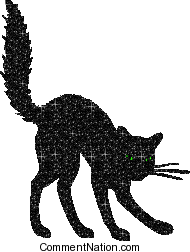
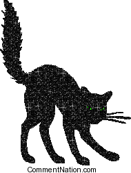
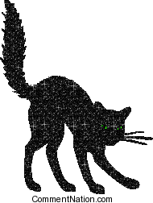
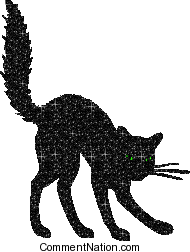

onhell.website is the official website of the novel
 

 

onhell.website is the official website of the novel
5pm, Sunday, January 26, 2019
JOHANNA HEDVA DISCUSSES THEIR NOVEL ON HELL WITH ASHER HARTMAN
Skylight Books
1818 N Vermont Ave
Los Angeles, CA 90027
I mean, fuck. How do we get there, this rooted, brutalized, devastating space where we are forced to experience the capability of language to create a world in which all the noise around you is distortion, escape is a splintered hope, and the performance of life is the performance of bloody meat, existence as persistently crossed and breath an interstitial dream of falling. Fuck, I say, as NIN’s "Starfuckers, Inc" is playing in the back of my head and the swells of this world become the swells of my own blood pumping through my yet-to-be-corpse. Brilliant. Fervent. Unafraid and unapologetic. This text will consume you.
- Janice Lee, author of The Sky Isn’t Blue
It’s fucking brilliant. I’m in love. If there have to be novels, On Hell is what they should do.
- Anne Boyer, author of Garments Against Women and A Handbook of Disappointed Fate
At some point while reading On Hell, I had the sensation that my heart had pushed through my chest, my brain had pushed through my skull, and my guts had pushed through my abdomen, and that I was, in solidarity with Hedva’s writing, wearing my insides on the outside of my body. Only writing this nakedly vulnerable could be this intensely embodied, and only writing this intensely embodied could be this insurrectionary.
- Brandon Shimoda, author of The Desert
On Hell is a story of a 21st-century Icarus-as-hacker, a wild dreamer who builds a set of wings from the internet woods. Hedva writes with fierce clarity on the perimeters of global power and the skyscraper stakes of truth, where “the money is closest to the sun,” and those confined to the prison-yard ground have a bird’s eye view to this endless machine of technology and body mass. This book thrives inside the meat of my terrors and the clouds of my hopes. It’s affirming to read work that recognizes technology as a real-life blood web that has the capacity to both free and enslave the human spirit.
- Nikki Wallschlaeger, author of Crawlspace
Several pages into On Hell I realized the transcription of the despairing, brilliant anti-hero Rafael was fiction. "Nah Mama!" he says to his nameless female interlocutor, never breaking from his obscenity-driven, body-hacking character while unfolding a maybe-allegorical “biography.” The stairway to heaven, I’ve been told, is populated by angels who are both ascending from and descending to earth. In On Hell, like in Wim Wenders’s Wings of Desire, Hedva brings into question who is wearing the wings. Is it Rafael, whose angry, paranoid diatribes out-shimmy the orders of mental health and the rule of law? Or is it his mostly silent listener, who in receiving his anarchic, post-colonial fantasy loses her objective stance through identification? On Hell is one hell of a post-matrix love story.
- Alexandra Grant, author of The Artists’ Prison
A hundred white-screen articles might never get in your blood like On Hell.
- Overland
One of Dennis Cooper's Faves of 2018 --> read it
fucking angel doing
fucking antshitsized brains
fucking anxiety i
fucking anywhere for
fucking architecture and
fucking architecture where
fucking article but
fucking at all
fucking at all
fucking at all
fucking at all
fucking at all
fucking at all
fucking back like
fucking badass because
fucking bam pauses
fucking be brave
fucking be buried
fucking be real
fucking beautiful country
fucking believe in
fucking biggie ants
fucking birds what
fucking black python
fucking bleeding like
fucking bleeding out
fucking blew a
fucking blood my
fucking blood squirting
fucking body are
fucking body intact
fucking book about
fucking book i
fucking boxes for
fucking brown im
fucking building piled
fucking buildings your
fucking called light
fucking candy just
fucking cant stand
fucking car the
fucking cias stonevaulted
fucking clothes there
fucking clue about
fucking computers that
fucking concrete and
fucking concrete up
fucking day with
fucking definition is
fucking deity thats
fucking deleting nuance
fucking dick into
fucking did it
fucking die mama
fucking disabused everyone
fucking do me
fucking dongdrool poetry
fucking drag along
fucking drag so
fucking dreams at
fucking dumbass amateur
fucking education pay
fucking effort to
fucking engine of
fucking entertainment of
fucking everywhere and
fucking eyes out
fucking factories with
fucking fall the
fucking famous laughs
fucking feet and
fucking finally sin
fucking finding ones
fucking fix the
fucking floor and
fucking floor and
fucking fly that
fucking flying through
fucking food out
fucking free space
fucking fullsized glory
fucking funny thing
fucking glowing and
fucking go and
fucking godfucking prisons
fucking good because
fucking good motherfuck
fucking gorgeous arent
fucking got right
fucking got was
fucking government can
fucking gravity in
fucking ground i
fucking ground i
fucking ground i
fucking ground now
fucking growing out
fucking hack they
fucking hacker thats
fucking had wings
fucking hard and
fucking hardcore hahahaha
fucking hate and
fucking have a
fucking heads and
fucking heart tell
fucking her bent
fucking horror movie
fucking hot for
fucking house the
fucking immediately right
fucking immortal bronzed
fucking impossibility that
fucking impossible i
fucking insignificant no
fucking internet for
fucking is like
fucking jumping up
fucking keep their
fucking keeping you
fucking labor line
fucking level just
fucking lice all
fucking life haha
fucking life how
fucking lifted me
fucking like allow
fucking like one
fucking living in
fucking living in
fucking machine i
fucking mad as
fucking made of
fucking made sure
fucking makes everything
fucking mamapump so
fucking man and
fucking masturbated like
fucking mess because
fucking miles of
fucking move my
fucking nail salon
fucking nightmare no
fucking official modafinil
fucking old dirt
fucking on_hell sent
fucking once id
fucking organic as
fucking out come
fucking penetrated the
fucking periodista even
fucking pigs fucking
fucking poetry right
fucking politicians and
fucking pop you
fucking prison shitters
fucking project it
fucking promise me
fucking purpose in
fucking push your
fucking quote unquote
fucking quote unquote
fucking real motherfucking
fucking recorder real
fucking recorder that
fucking refrigerator you
fucking richboy i
fucking ripped a
fucking ripped right
fucking robot but
fucking roosevelt high
fucking said i
fucking shit up
fucking shrink inside
fucking shrivelhole sincere
fucking sick of
fucking singing about
fucking size of
fucking skyscraper of
fucking skyscrapers in
fucking small and
fucking speak their
fucking stand in
fucking stand that
fucking stop up
fucking straight im
fucking stretch this
fucking stupid fucks
fucking sunstrokedpowergodheadlight to
fucking superglue to
fucking symbol i
fucking take me
fucking tear that
fucking thing on
fucking thing that
fucking this applepussy
fucking this birdy
fucking time alright
fucking tired of
fucking toothpick and
fucking track him
fucking trampoline with
fucking transparently cooked
fucking undo command
fucking using a
fucking wait hahahahahahaha
fucking waiting thats
fucking waits for
fucking white parents
fucking wings its
fucking write about